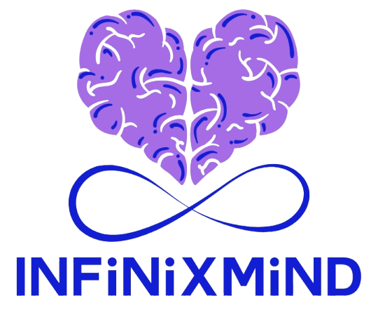

Início
A tecnologia como aliada
Quem são os neurodivergentes?
Neurodiversidade e saúde mental
Mais

Explore a conexão profunda entre neurodivergência, depressão e ansiedade, oferecendo compreensão, apoio e caminhos para uma mente mais saudável e infinita.